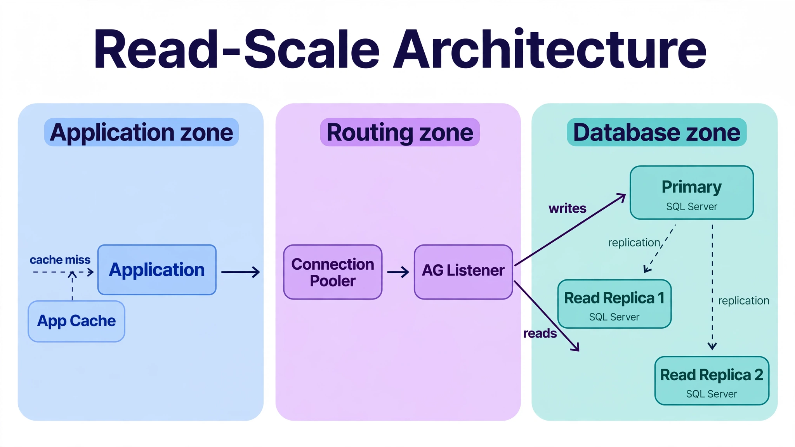

Chapter 14: Scaling Techniques
Scaling a database is never a single decision made once and forgotten. It is an ongoing discipline — a set of architectural choices, configuration strategies, and operational habits that collectively determine whether your database grows gracefully with your workload or buckles under pressure at the worst possible moment. This chapter walks through the full spectrum of scaling techniques available to SQL Server DBAs: from understanding why and how databases reach their limits, to vertical and horizontal scaling strategies, partitioning, read replicas, connection management, and the architectural patterns used by teams running databases at serious production scale. By the end, you will have a clear, practical framework for evaluating your own systems and applying the right technique to the right problem.
---
Understanding the Limits: Where Databases Begin to Struggle
Before applying any scaling technique, you need to understand what is actually being constrained. Database performance degrades in predictable ways, and misidentifying the bottleneck leads to expensive mistakes — adding more CPU when the real problem is I/O, or adding read replicas when the real problem is connection saturation.
The four primary resource axes are CPU, memory, I/O, and connections. CPU pressure shows up when query plans are computationally expensive: complex joins, large aggregations, missing indexes forcing full scans, or stored procedures doing serious calculation work. Memory pressure appears when the buffer pool cannot hold the working set of data, forcing repeated disk reads for pages that should have stayed in cache. I/O pressure manifests when reads and writes to storage outpace what the underlying subsystem can handle, which in cloud environments often means you have hit IOPS limits rather than physical disk limits. Connection pressure is somewhat unique to databases — each connection carries overhead, and systems that were designed for tens of concurrent connections start misbehaving when hundreds or thousands arrive simultaneously.
Identifying the actual bottleneck requires looking at the right signals. In SQL Server, the sys.dm_exec_requests and sys.dm_os_wait_stats DMVs are the starting point for almost every performance investigation — the former tells you what sessions are doing right now, the latter tells you what the instance has been waiting on.
-- Identify the top wait types accumulated since last restart
SELECT TOP 20
wait_type,
waiting_tasks_count,
wait_time_ms,
max_wait_time_ms,
signal_wait_time_ms,
CAST(wait_time_ms * 100.0 / SUM(wait_time_ms) OVER() AS DECIMAL(5,2)) AS pct_total
FROM sys.dm_os_wait_stats
WHERE wait_type NOT IN (
'SLEEP_TASK','BROKER_TO_FLUSH','BROKER_EVENTHANDLER',
'CHECKPOINT_QUEUE','DBMIRROR_EVENTS_QUEUE','SQLTRACE_BUFFER_FLUSH',
'CLR_AUTO_EVENT','DISPATCHER_QUEUE_SEMAPHORE','XE_TIMER_EVENT'
)
ORDER BY wait_time_ms DESC;High IO_COMPLETION or PAGEIOLATCH_SH waits point clearly at I/O bottlenecks. High LCK_M_* waits point at lock contention. The technique you apply to scale the system depends entirely on what you find here.
One important concept to internalize early: scaling and optimizing are not the same thing. Optimization means getting more out of the resources you already have — better query plans, better indexes, reduced locking. Scaling means changing the capacity of the system itself. Good DBAs always optimize first. Adding hardware or adding nodes to a system running inefficient queries just means you are running inefficient queries on more hardware. The scaling techniques in this chapter assume a reasonably well-tuned baseline.
---
Vertical Scaling: Getting More from a Single Server
Vertical scaling — adding more CPU, memory, or faster storage to an existing server — is the simplest scaling lever available and is almost always the first one applied. It requires no application changes, no replication setup, and no data redistribution. For most workloads at moderate scale, vertical scaling is the right answer, and it has meaningful headroom before you hit its limits.
Memory is typically the highest-impact upgrade for database servers. The reason is fundamental to how databases work: SQL Server maintains an in-memory buffer pool, and the fraction of your working data set that fits in that pool determines how often the system reads from disk versus from memory. A read from memory is measured in nanoseconds; a read from an NVMe SSD is measured in microseconds; a read from a spinning disk is measured in milliseconds. The difference is orders of magnitude.
In SQL Server, the max server memory setting controls the buffer pool ceiling. On a dedicated server, set this to total RAM minus a reserve for the OS and other processes — typically leaving 10-20% or at least 4GB for the OS on smaller servers. Under-sizing max server memory is the most common memory misconfiguration: SQL Server will use what you give it, and an undersized buffer pool turns a memory-fit workload into a disk-bound one. Watch Page Life Expectancy — a value persistently under 300 seconds on OLTP means the buffer pool is under pressure.
CPU scaling matters most for analytical workloads. SQL Server supports intra-query parallelism, where a single query executes across multiple CPU cores simultaneously. The max degree of parallelism (MAXDOP) server configuration sets an upper bound, and the cost threshold for parallelism setting determines how expensive a serial plan must be before parallelism is considered.
Storage upgrades — particularly moving from spinning disks to NVMe SSDs — can eliminate I/O bottlenecks entirely on systems that were previously I/O bound. For write-heavy workloads, the throughput of the transaction log device is often the limiting factor. Placing the transaction log file on dedicated, high-throughput storage is a simple and effective technique — log writes are sequential, so they benefit enormously from isolated, low-latency devices.
The honest limitation of vertical scaling is that it is bounded and expensive. There is a maximum size for a single server, and at the high end of that range, the cost per unit of capacity grows steeply. At some point — and the threshold varies widely by workload — horizontal techniques become more cost-effective. The value of understanding vertical scaling thoroughly is that it tells you where you actually are on that curve.
---
Partitioning: Scaling the Data Layer
Partitioning divides a large table into smaller, physically separate segments called partitions, while presenting them as a single logical table to the application. It is primarily a manageability and performance technique for large tables, and it becomes relevant when a table has grown to the point where maintenance operations (index rebuilds, CHECKDB) are slow, queries are scanning more data than they need to, and archiving old data requires deleting from a table that is always hot.
Range partitioning is the most common approach for time-series data, logs, events, and any table where rows have a natural chronological ordering. You define ranges on a date or timestamp column, and each partition holds rows for a specific period. The query planner can then skip entire partitions based on the predicate — a technique called partition pruning — which dramatically reduces the data scanned for queries that filter on the partition key.
-- Create a partition function defining the boundary points
CREATE PARTITION FUNCTION pf_orders_date (DATE)
AS RANGE RIGHT FOR VALUES (
'2024-01-01',
'2025-01-01',
'2026-01-01'
);
-- Create a partition scheme mapping partitions to filegroups
CREATE PARTITION SCHEME ps_orders_date
AS PARTITION pf_orders_date
ALL TO ([PRIMARY]);
-- Create the table using the partition scheme
CREATE TABLE orders (
order_id BIGINT NOT NULL,
customer_id INT NOT NULL,
order_date DATE NOT NULL,
total_amount NUMERIC(12,2)
) ON ps_orders_date(order_date);
-- Check which partition a date range falls in
SELECT $PARTITION.pf_orders_date('2024-03-15') AS partition_number;List partitioning divides data by discrete values — region codes, status types, tenant identifiers in multi-tenant systems. It works well when you have a bounded set of values that naturally segment your workload. Hash partitioning distributes rows evenly across a fixed number of partitions using a hash of the partition key, which helps when there is no natural range or list structure and the goal is simply to distribute data and reduce index sizes.
The performance benefits of partitioning are real but conditional. Partition pruning only activates when the query's WHERE clause filters on the partition key, and the filter must use a constant or a stable expression — not a non-deterministic function. A query that joins a partitioned table against another table using the partition key in the join condition will typically still benefit from partition pruning in modern versions of both engines, but you must verify this with EXPLAIN output rather than assume it.
Partitioning also simplifies data lifecycle management significantly. Dropping a partition is a metadata operation — it completes instantly regardless of how many rows the partition contains. Loading new data into a staging table and then attaching it as a new partition is faster than bulk-inserting into a live table. For systems that retain rolling windows of data (the last 13 months, for example), this pattern turns a painful batch deletion job into a trivially fast operation.
The most common mistake with partitioning is applying it too early or to the wrong tables. A table with ten million rows and a well-designed index does not need partitioning — the index is adequate. Partitioning introduces complexity: you need to manage partition creation ahead of time, ensure that partition keys appear in queries, and understand how aligned and non-aligned indexes behave differently — partition-aligned indexes switch partitions in metadata-only operations, non-aligned ones don't. Apply it when you can demonstrate a clear need.
---
Horizontal Scaling: Read Replicas and Distributed Reads
Vertical scaling and partitioning improve how efficiently a single server handles data. Horizontal scaling adds more servers to the picture. For most OLTP workloads, the practical form of horizontal scaling is the read replica — a secondary server that maintains a copy of the primary's data and accepts read-only queries.
The business case for read replicas is straightforward: if your primary server is CPU- or I/O-bound serving read queries, moving reads to one or more replicas takes load off the primary, freeing it to handle writes and critical reads without contention. Analytics queries, reporting workloads, and batch jobs are ideal candidates for redirection to replicas. These are often expensive, long-running reads that would otherwise compete with transactional workloads for buffer pool space and CPU time.

Writes travel the top path — application, connection pooler, AG listener — straight to the primary, while reads fan out to the readable secondaries. The dashed replication arrows keep every replica current, and the application cache short-circuits repeat reads before they ever reach the database. Scale reads by adding secondaries; the write path never changes.
*Figure: Horizontal read scaling — writes are routed to the primary, read traffic is distributed across replicas through a pooler, and a caching layer absorbs hot reads before they reach the database at all.*
SQL Server implements read scale-out through Availability Group secondary replicas. The primary streams transaction-log records to secondaries continuously, typically with a lag of milliseconds on a healthy network. Secondaries can be readable, accepting read-only connections while redo runs — with ApplicationIntent=ReadOnly routing through the AG listener sending reporting traffic there automatically. For simpler needs, log shipping provides a delayed standby without the AG infrastructure.
SQL Server offers Always On Availability Groups as its primary high-availability and read-scale mechanism. An Availability Group maintains synchronous or asynchronous replicas. Synchronous replicas guarantee no data loss but add latency to commits because the primary waits for the secondary to harden the log before acknowledging. Asynchronous replicas have a potential data loss window but impose no commit latency. Secondary replicas configured with the ALLOW_CONNECTIONS = READ_ONLY option and an appropriate APPLICATION_INTENT = ReadOnly connection string setting will route read workloads to the replica.
-- On the primary: check AG replica sync state and estimated data loss
SELECT
ar.replica_server_name,
ars.role_desc,
ars.synchronization_health_desc,
ars.connected_state_desc,
dbrs.synchronization_state_desc,
dbrs.last_commit_time,
dbrs.secondary_lag_seconds
FROM sys.availability_replicas ar
JOIN sys.dm_hadr_availability_replica_states ars
ON ar.replica_id = ars.replica_id
JOIN sys.dm_hadr_database_replica_states dbrs
ON ar.replica_id = dbrs.replica_id
JOIN sys.availability_databases_cluster adc
ON dbrs.group_database_id = adc.group_database_id
ORDER BY ar.replica_server_name;The replication lag is the central concern when using replicas for reads. If a replica is lagging by several seconds or more, read queries against it will return stale data. For most reporting and analytics workloads, this is acceptable — a dashboard showing revenue from the past hour does not break if the data is five seconds old. For workloads where a user writes a record and then immediately reads it back, stale data is a problem. This is the read-your-writes consistency challenge, and it requires either routing those specific reads back to the primary or implementing a version check to ensure the replica has caught up sufficiently before serving the read.
Application-side routing to replicas can be implemented at several layers: in the application's connection configuration (many frameworks support primary/replica connection strings natively), or through SQL Server's Always On listener, which provides a single virtual network name routing connections to the appropriate replica based on the ApplicationIntent property in the connection string — a clean, low-friction approach.
Beyond read replicas, some workloads eventually require sharding — distributing writes across multiple nodes by partitioning the data itself. The honest guidance: you probably don't need it. A single well-tuned primary handles enormous write throughput, and most systems never reach its limit. For Azure SQL, Elastic Database features (elastic pools for multi-tenant scale, shard maps for distribution) offer the path when you genuinely outgrow one primary. Sharding is a significant architectural commitment — it requires careful selection of a distribution key that prevents hot shards and allows most queries to be resolved on a single node rather than requiring cross-shard scatter-gather execution.
---
Connection Pooling and the Thousand-Connection Problem
One of the most consistently underestimated scaling challenges is connection management. SQL Server's configurable connection limit is high, but throughput degrades well before it — worker-thread exhaustion and scheduler contention bite long before you hit any configured ceiling. Understanding this problem and the tools that solve it is non-negotiable knowledge for any production DBA.
In SQL Server, each connection gets a worker thread from the thread pool. Hundreds of connections are fine; thousands of concurrently active connections cause worker-thread exhaustion and scheduler contention that visibly degrade throughput, even on strong hardware. The practical guidance is the same as everywhere: far fewer active connections than you think, with pooling in front — and monitor sys.dm_os_workers for the workers actually in use.
SQL Server's architecture is different: it uses a thread-pool model where connections are served by OS threads rather than processes. This makes it somewhat more tolerant of high connection counts, but it is not immune. At very high concurrency, SQL Server's scheduler contention, latch contention, and lock manager overhead all increase. The practical scaling ceiling for direct connections in both systems is lower than most developers expect.
The standard solution is connection pooling. In the SQL Server world this lives primarily in the client driver: ADO.NET / SqlClient pooling maintains a pool of long-lived connections per connection string, multiplexing application open/close calls onto fewer real database connections. The pool is keyed by the exact connection string — which is why the guidance is to use identical connection strings everywhere and never build them dynamically per user. ODBC and JDBC drivers pool similarly; a middle-tier pooler (or the application's own pool) sits between app and database doing the same multiplexing job. Pooling breaks down the moment session-level state matters — temp tables, SET options, and open transactions pin a connection to its session, so keep pooled work stateless and short.
-- Check current connections by login and status
SELECT
login_name,
status,
COUNT(*) AS connection_count,
MAX(DATEDIFF(SECOND, last_request_end_time, GETDATE())) AS max_idle_seconds
FROM sys.dm_exec_sessions
WHERE is_user_process = 1
GROUP BY login_name, status
ORDER BY connection_count DESC;
-- Check the server's max worker threads setting
SELECT
name,
value_in_use AS configured_value
FROM sys.configurations
WHERE name IN ('max worker threads', 'max connections');For SQL Server, connection pooling is typically handled at the ADO.NET or JDBC driver level rather than by a standalone proxy. The .NET SqlClient connection pool and Java's HikariCP or c3p0 pools maintain pools of open connections per connection string. The key parameters to understand are minimum pool size, maximum pool size, and connection lifetime. Setting maximum pool size too low causes application timeouts when demand exceeds pool capacity; setting it too high recreates the connection proliferation problem you were trying to solve. A well-tuned pool keeps the maximum at a level the database can handle comfortably — often 20-50 connections per application instance — and scales out application instances horizontally rather than increasing per-instance pool sizes.
Idle connection handling deserves attention. SQL Server has no server-side timeout for idle open transactions, which makes application-level timeout handling critical: a leaked transaction holds locks indefinitely and blocks version-store cleanup under RCSI. Set command timeouts in the data-access layer, audit for sessions with open transactions and no active request, and treat connection leaks as bugs to fix rather than tuning opportunities.
---
Caching, Workload Isolation, and Architectural Patterns for Scale
Scaling the database server itself is only part of the picture. Production systems at serious scale typically combine database-level techniques with architectural patterns that reduce how much work the database has to do in the first place.
Application-layer caching sits in front of the database and intercepts reads for data that changes infrequently relative to how often it is read. Reference data — country codes, product catalogs, configuration tables, permission sets — is read thousands of times per second in a busy application but changes rarely. Serving these reads from an in-memory cache like Redis or Memcached instead of the database removes enormous read volume from the database tier entirely. The discipline here is cache invalidation: the cache must be updated or cleared when the underlying data changes, and the tolerable staleness window must be explicitly defined for each cached data type. Cache poisoning and stale reads are real operational risks that require careful design.
CQRS (Command Query Responsibility Segregation) is an architectural pattern that formalizes the separation between writes and reads at the application layer. The write path updates the primary database and publishes events. The read path consumes those events and maintains read-optimized projections in separate stores — potentially denormalized tables, materialized views, or entirely different storage systems optimized for specific query shapes. In SQL Server, indexed views serve a similar purpose within the database itself — materialized and maintained automatically by the engine, at the cost of write overhead on the base tables.
-- Create an indexed view (SQL Server's equivalent of a materialized view)
CREATE VIEW dbo.monthly_revenue_summary
WITH SCHEMABINDING
AS
SELECT
DATEFROMPARTS(YEAR(order_date), MONTH(order_date), 1) AS month,
region,
SUM(total_amount) AS total_revenue,
COUNT_BIG(*) AS order_count
FROM dbo.orders
GROUP BY
DATEFROMPARTS(YEAR(order_date), MONTH(order_date), 1),
region;
GO
-- Creating a unique clustered index materializes the view
CREATE UNIQUE CLUSTERED INDEX idx_mrs_month_region
ON dbo.monthly_revenue_summary (month, region);Workload isolation is the practice of ensuring that different classes of workload do not interfere with one another. The most dangerous pairing in production is an OLTP workload running on the same server as an ad-hoc analytics workload. Analytics queries consume large amounts of CPU and I/O, they thrash the buffer pool by reading cold data, and they hold locks. SQL Server's Resource Governor allows you to cap CPU and memory allocations per workload group, ensuring that an analyst running a large report cannot starve transactional sessions of resources.
SQL Server's Resource Governor classifies incoming connections into workload groups based on rules you define — by login, by application name, or by other session attributes — and each group is bound to a resource pool with configurable CPU and memory limits. This is a native, built-in capability available without extensions, and it is one of the more underused tools in the platform; many SQL Server environments run mixed workloads on a single instance for years without ever configuring it, relying instead on informal agreements about when reports are allowed to run. Where Resource Governor isn't configured, the simpler and more common pattern is physical separation: route analytical and reporting workloads to a read replica, and reserve the primary exclusively for transactional traffic. This avoids the problem entirely rather than managing it through allocation limits, at the cost of the replication lag discussed earlier in this chapter.
The broader lesson across all of these patterns — caching, CQRS, materialized/indexed views, and workload isolation — is that the highest-leverage scaling technique is often not a database configuration change at all. It is reducing the amount and kind of work that reaches the database in the first place. A well-tuned server with a smart caching layer in front of it will consistently outperform a poorly-architected system running on more expensive hardware.
---
Key Takeaways
QueryOptimizer — Self-Hosted SQL Performance Workbench
EXPLAIN visualizer · Index advisor · Slow query dashboard · SQL Server
Test yourself on this chapter
5 questions · instant scoring · explanations included